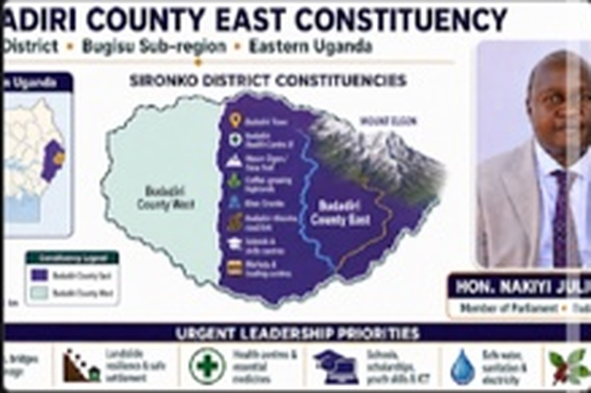

Your community. Your voice.
A mobile-first route for residents to record issues, find opportunities and follow community-facing information without first travelling to an office.
Tell the office what needs attention.
The production system should route each submission by area and category, assign a reference number and create an auditable follow-up trail.

The office should know where the issue is.
Submissions and project updates can be grouped by sub-county or town council so residents can filter information that affects their own area.
Examples shown from publicly available Sironko administrative listings; the final production dataset should be verified with the district/constituency office.
One place to find what is open.
A live version can publish verified opportunities from government, NGOs, schools, training providers and private-sector partners.
Training & jobs
Skills programmes, apprenticeships, internships, sports and digital work opportunities.
Enterprise support
Finance, business training, market access and productive-equipment opportunities.
Scholarships
Scholarships, bursaries, admissions, TVET and tertiary pathways.
Public programmes
Information on PDM, agriculture, social protection and local service programmes.
Leadership that returns to the people.
Publish upcoming dialogues, field visits and programme days with location, time, agenda and a way for residents to submit questions before the meeting.
Engagement calendar
Filters by area, issue and audience. Residents can add an event to their phone calendar or opt into WhatsApp/SMS reminders.
No official contact number has been inserted into this prototype because none was verified in the supplied materials.